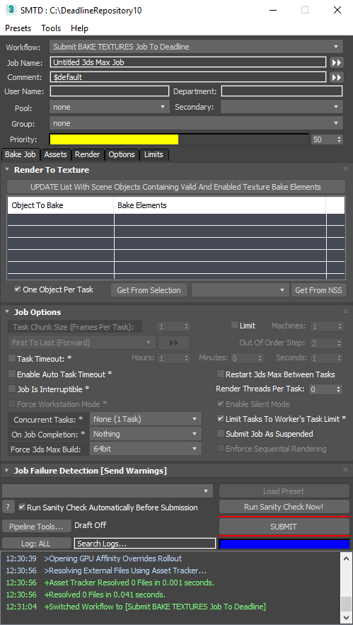

3ds Max - Integrated Submitter Workflow - Bake Textures¶
Bake Textures Workflow Overview¶
The Bake Textures workflow implements the same functionality previously available in SMTD via the Misc. tab, but in the form or a custom workflow mode with a more user-friendly UI.
It lets you submit a Deadline job to bake textures using BakeElements set up via the standard 3ds Max Render To Texture dialog.
Accessing The Workflow¶
To use the workflow, select the Submit BAKE TEXTURES Job To Deadline entry from the Workflow: drop-down list on top of the SMTD UI.
This workflow is always available.
User Interface
The Bake Textures workflow adds a Bake Job tab
It contains a custom Render To Texture rollout
It features the standard Job Options rollout of SMTD, but with several controls disabled.
It also features the standard Job Failure Detection rollout with no changes.
The standard Assets, Render, Options and Limits tabs will also be available with most of their default content.
The Render tab will only feature the rollouts relevant to Texture Baking, and does not contain the Pathing, DBR etc. rollouts.
Submit Button Behavior
The SUBMIT button of SMTD will be disabled if
The current renderer does not support texture baking (e.g. Krakatoa)
There are scene objects set up for texture baking, but their baking is disabled via the Render To Texture dialog.
The scene objects set up for baking have no valid Bake Elements.
None of the available scene objects have been checked in the Render To Texture rollout’s list.
No objects have been set up for baking via the 3ds Max Render To Textures dialog.
Custom User Interface Controls¶
UPDATE List With Scene Objects Containing Valid And Enabled Texture Bake Elements button
Pressing this button will refresh the Objects To Bake list from the scene to reflect any recent changes.
Objects To Bake listView
Shows the scene objects that have been set up for baking via the Render To Texture dialog of 3ds Max.
Offers a checkbox in front of each valid object to quickly toggle the processing of objects without using the Render To Texture dialog.
Shows the Bake Elements assigned to each object for reference.
One Object Per Task checkbox
When checked, each object will be baked by a separate task in the job.
When unchecked, the baking of all objects will be performed within a single task.